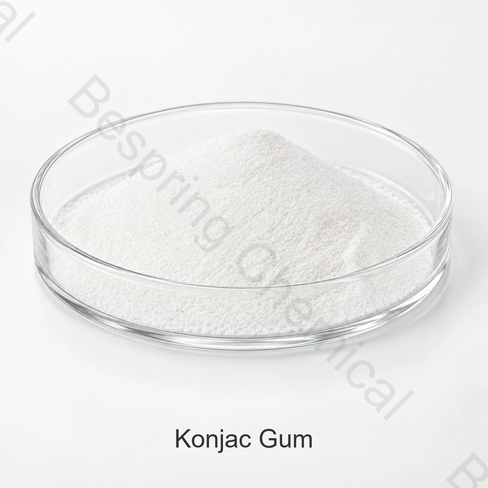

เนื้อที่ประมวลผลแล้ว
การผสมน้ํา การกัด การให้ และความเข้ากันได้กับเกลือ และไฮโดรคอลลอยด์อื่น ๆ
ส่วนประกอบระดับอาหาร hydricholoid และ accessing ence eth INS 425
กลูโคแมนแนนเป็นองค์ประกอบหลักของกัมบุก เมื่อต้องการเพิ่มความข้น อุ้มน้ำ หรือสร้างเจล ให้เทียบความบริสุทธิ์ การดูดน้ำ เงื่อนไขวัดความหนืด และขนาดอนุภาค

ภาพประกอบผลิตภัณฑ์ · ระบุเกรดและบรรจุภัณฑ์ในใบเสนอราคา
แบ่งปันอาหาร ข้อจํากัดเป้าหมาย วิธีการทดสอบ ปริมาณ และจุดหมายปลายทาง
เอกสารคุณภาพคอสเชอร์ ฮา ลาล และ ISO
จัดเก็บวัตถุมาตรฐาน25 kraft ถุงกระดาษ
ยืนยันเกรด ปริมาณ บรรจุภัณฑ์ และเงื่อนไขส่งมอบในใบเสนอราคา
หลักฐานตรงกันข้อกําหนดปัจจุบันและ COA เมื่อร้องขอ
ภาพรวมของผลิตภัณฑ์
กัมบุกเกรดอาหารคือแป้งหรือกัมจากบุกที่อุดมด้วยกลูโคแมนแนน FAO/JECFA ระบุแป้งบุกภายใต้ INS 425 และ CAS 37220-17-0
ความเหมาะสมเชิงพาณิชย์ขึ้นอยู่กับเกรด แหล่งผลิต วิธีทดสอบ การใช้งาน และกฎของตลาดปลายทางที่แน่นอน การซื้อขายให้ยึดข้อกำหนดฉบับปัจจุบันที่ลงนามแล้วและ COA ประจำรุ่น
การตรวจสอบโปรแกรม
เลือกโปรแกรมนําอาหารที่อนุญาต และประเมินปริมาณยาและประสิทธิภาพในผลิตภัณฑ์ที่เสร็จแล้ว
การผสมน้ํา การกัด การให้ และความเข้ากันได้กับเกลือ และไฮโดรคอลลอยด์อื่น ๆ
ใช้การทดลองเพื่อทําให้การพักการเรียน การขาดความไว และความรู้สึกปากดีขึ้น
เลือกระดับความว่องไวและระดับกลูโคมันนัน สําหรับเนื้อเจลและกระบวนการ
การรองรับร่างกาย การควบคุมน้ํา และเนื้อผ้าที่เสถียร ในระบบที่เข้ากันได้
ข้อกําหนดการค้า
ข้อกำหนดอ้างอิงทางการค้านี้แยกจาก COA รุ่นผลิตและกฎระเบียบ ต้องตกลงเกรด ฐานวิเคราะห์ และวิธีทดสอบสำหรับคำสั่งซื้อ
ปัดหรือใช้แป้นพิมพ์เพื่ออ่านทุกคอลัมน์
| รายการทดสอบ | BPKJ3 | BPKJ5 | BPKJ7 | BPKJ9 | BPKJ11 | BPKJ13 |
|---|---|---|---|---|---|---|
| กลูโคมันนัน พื้นแห้ง | ≥70% | ≥75% | ≥80% | ≥85% | ≥85% | ≥90% |
| การเคลื่อนไหว | ≤12.0% | ≤11.0% | ≤10.0% | ≤10.0% | ≤10.0% | ≤10.0% |
| เถ้า | ≤4.5% | ≤4.5% | ≤3.0% | ≤3.0% | ≤3.0% | ≤3.0% |
| ตะกั่ว (Pb) | ≤0.8 mg/kg | ≤0.8 mg/kg | ≤0.8 mg/kg | ≤0.8 mg/kg | ≤0.8 mg/kg | ≤0.8 mg/kg |
| สารหนู (As) | ≤3.0 mg/kg | ≤3.0 mg/kg | ≤3.0 mg/kg | ≤3.0 mg/kg | ≤3.0 mg/kg | ≤3.0 mg/kg |
| ซัลเฟอร์ไดออกไซด์ | ≤900 mg/kg | ≤900 mg/kg | ≤900 mg/kg | ≤900 mg/kg | ≤900 mg/kg | ≤900 mg/kg |
| pH | 5–7 | 5–7 | 5–7 | 5–7 | 5–7 | 5–7 |
การแสดงตัวเฉพาะและการแสดงตัว: Konjac ga เป็นตัวแปรของ motherical-social music leagonan polymer ไม่ใช่โมเลกุลขนาดเล็กที่แสดงโดย C6H10O5. เปรียบเทียบเกรดโดยเนื้อหา Glacomananani, viscosity และขนาดอนุภาค. ความเข้มข้นแบบจุลภาค, อุณหภูมิและวิธีการ, บวกกับเทคนิคและวิธีการสําหรับผลลัพธ์ไมโครไบนารี, ในสัญญาการลงนาม.
การรองรับการจัดอันดับ
ต้องการกําหนดลายเซ็นในปัจจุบัน หรือ TDS, SDS, วิธีการทดสอบ และตัวแทนหรือชุด COA
ตรวจข้อกำหนดผลิตภัณฑ์ SDS และ COA ของล็อต หากต้องมีเอกสารความปลอดภัยอาหาร แหล่งกำเนิด สารก่อภูมิแพ้ ฮาลาล หรือโคเชอร์ ให้แจ้งขอบเขตที่ต้องใช้และตรวจให้ตรงกับเกรดและสถานที่
ทบทวน ดู FAO/JECFA แผ่นแผ่นแป้ง monjac และใช้กฏของตลาด
การจัดเก็บและการจัดการ
คําถามของผู้ซื้อ
ต้อง มี การ ยืน ยัน เรื่อง การ ใช้ ยา ตาม กฎหมาย, การ กิน ยา, และ การ กระทํา เพื่อ ตลาด อาหาร ที่ เสร็จ สมบูรณ์ และ การ ไป ถึง จุด หมาย ปลาย ทาง.
ยืนยันเกรด ปริมาณ บรรจุภัณฑ์ และเงื่อนไขส่งมอบในใบเสนอราคา
ต้องการกําหนดลายเซ็นในปัจจุบัน หรือ TDS, SDS, ตัวแทน หรือ COA ชุด, วิธีการทดสอบ และใช้ใบรับรองคุณภาพอาหาร สําหรับเว็บไซต์การผลิตและเกรดที่แน่นอน
ให้ โปรแกรม ใช้ อาหาร ตาม ที่ ตั้งใจ ไว้, กําหนด เป้า หมาย, วิธี ทดสอบ, ปริมาณ, แพ็ค ของ, จุด หมาย ปลาย ทาง, ทํา ตาม วัน ส่ง ของ ที่ เลือก ไว้, และ กําหนด วัน ส่ง ของ.
การจัดหาที่อิงข้อกำหนด
ใช้งานร่วมกัน เกรดเป้าหมาย และเกณฑ์ ปริมาณ แพ็คสินค้า จุดหมาย และเอกสารที่จําเป็น
หากใช้แบบฟอร์มไม่ได้ โปรดใช้หน้าติดต่อ หรือส่งอีเมลถึงฝ่ายขาย.
บอกเราถึงตลาดเกรดและปลายทางของคุณ เราจะได้ยืนยันได้ว่าเอกสารไหน ที่สั่งได้
การอ้างอิงภายนอกไม่ใช่ใบรับรองชุดหรือค่าผลิตภัณฑ์ของเบสปริง